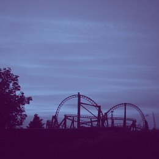
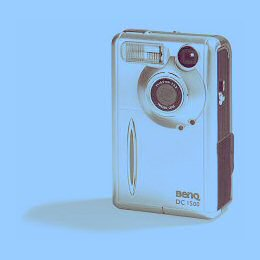

w
w
w
.
s
a
z
.
d
d
s
.
n
l

Portugal 2003
Kernwassiewussieland 2003
Roma 2005
my pics @ Flickr
...op deze pagina komen links
naar verschillende
foto-archieven/ -dagboeken...
(die ik ook nog op internet moet zetten)
l
o
t
s
o
f
p
h
o
t
o
s
Sinds ik mijn BenQ DC 1500 heb
gekocht, heb ik al heel wat foto's
ermee gemaakt. Voorheen moest ik
altijd eerst m'n rolletje volschieten,
en dan wachten tot het ontwikkeld
was, maar nu... Zo'n digitale camera
is toch wel een uitkomst.
